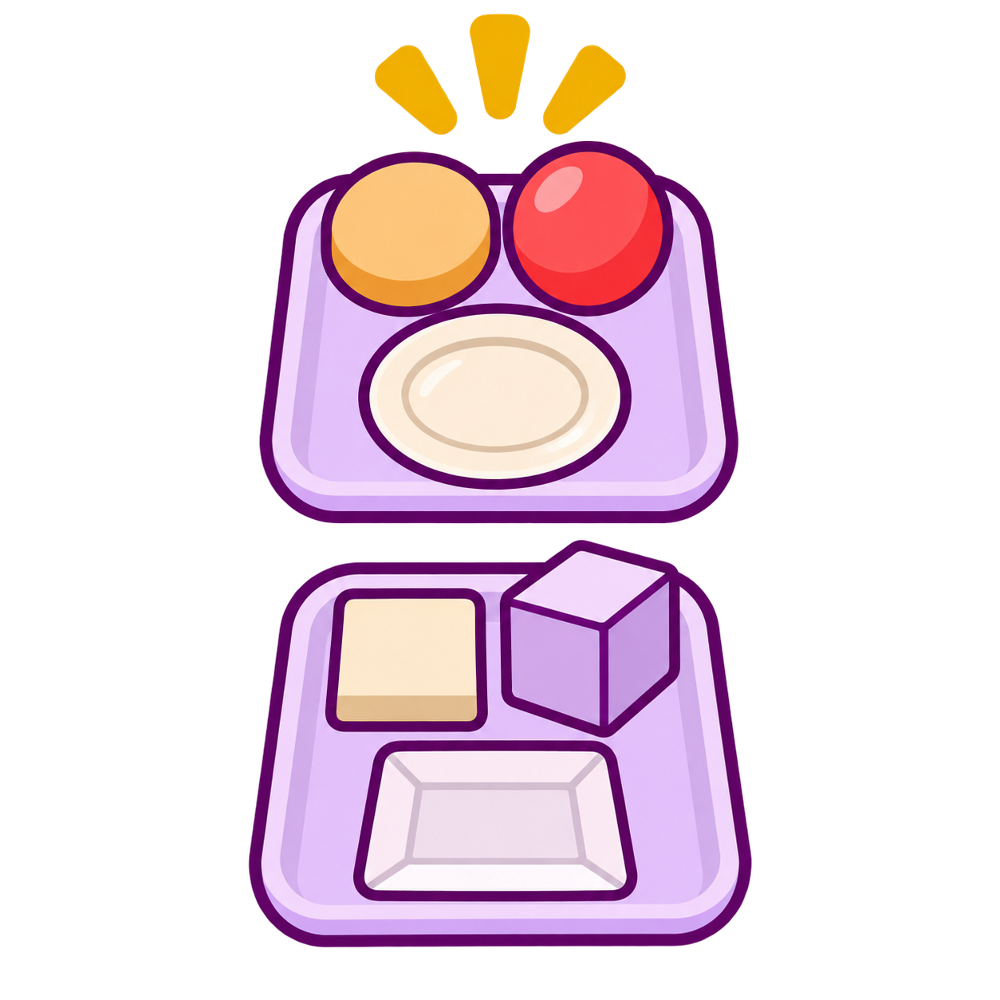

01 / 43 · WaniKani level 2

丸い
まるい
Circular
New illustration
Ready for this batch’s owner review
Open full size ↗Current picture concept: Matched round and square/cornered objects in two small groups; warm attention rays emphasize the round group. Avoid circle-as-a-noun distractor.
Suitability and answer-choice notes
Original picture recommendation: Show otherwise matched round and nonround objects; do not contrast this with 丸.
Suitability: Roundness is a property shared by many objects, rather than the name of one shape.
Existing review note: Round/circular overlaps circle; avoid pairing them as alternatives.
Prompt and source details
Exact generation prompt
Use case: precise-object-edit. SQUARE 1:1 transparent PNG illustration. Recompose this comparison into a COMPACT VERTICAL STACK on a square canvas. TOP: the tray holding three round objects (round disc, ball and circular plate), with three small gold attention rays. BOTTOM: a matching tray with three angular/squared comparison objects, slightly more subdued. Keep each tray a compact three-object cluster, not a long row. Match friendly plum outlines and gentle interior shading. Critically REMOVE ALL exterior purple/gold glow, haze, soft background color and drop shadows: pixels outside actual object/tray/attention-ray silhouettes must be genuinely transparent. Keep subject fills opaque. No cropping, words, numerals, calendar, panel or white backdrop. Preserve the round-versus-angular meaning and square format.
Stable ID: ja-v-b1514b201acd
- artifacts/scene-art-233/ja-v-b1514b201acd-v1.png
- artifacts/scene-art-233/references/style-object.png
- artifacts/scene-art-233/ja-v-b1514b201acd-v2.png
{
"references": [
{
"path": "artifacts/scene-art-233/ja-v-b1514b201acd-v1.png",
"role": "edit target for targeted quality correction",
"sha256": "ff47ceeea6df1337f523ddda9283eecab8c7fe8163496f6227ca43de3670f025"
}
],
"versions": [
{
"version": 1,
"path": "artifacts/scene-art-233/ja-v-b1514b201acd-v1.png",
"sha256": "ff47ceeea6df1337f523ddda9283eecab8c7fe8163496f6227ca43de3670f025",
"prompt": "Use case: scientific-educational. Asset: one Japanese listening vocabulary illustration. Input image 1 is STYLE REFERENCE ONLY: match the friendly rounded plum outlines, simple clear forms, restrained interior shading and warm gold/lavender accent palette; replace its subject with the requested scene. Use natural subject colors. Square 1:1 canvas, whole compact scene visible with generous genuinely transparent exterior margins and transparent gaps; preserve opaque subject fills. Clear at small card size. No backdrop rectangle, painted sky panel, checkerboard, calendar, page, frame, caption, labels, words, letters, numerals, watermark, glow, haze or exterior shadow. Use only the minimal scene required. Show two matching pale lavender trays side by side. Left tray holds THREE ROUND objects (a circular disc, round ball and round plate) with three small gold attention rays emphasizing this group; right holds otherwise similar squared/angular forms, subordinate in muted lavender. Keep roundness the only meaningful contrast.",
"references": [
{
"path": "artifacts/scene-art-233/references/style-object.png",
"role": "style reference only",
"sha256": "3610d3fbdc0cf2ca6ca8b1286e279a53fadb8b157de1187005f35500aed0a94b"
}
],
"generatorSource": "/Users/ajhconway/.codex/generated_images/01a1c218-2e56-7fa2-88ef-1fcfd7665c5a/exec-6639041e-f65d-4433-ad30-5c0e9070017b.png",
"tool": "built-in image_gen",
"qualityNote": "Unselected first draft: non-square canvas and unwanted exterior glow; targeted revision required.",
"status": "quality-rejected"
},
{
"version": 2,
"path": "artifacts/scene-art-233/ja-v-b1514b201acd-v2.png",
"sha256": "3d4b11d2c4d4364f40600a9f17dd4a4a52953343b9710aca055391644c6f5442",
"prompt": "Use case: precise-object-edit. SQUARE 1:1 transparent PNG illustration. Recompose this comparison into a COMPACT VERTICAL STACK on a square canvas. TOP: the tray holding three round objects (round disc, ball and circular plate), with three small gold attention rays. BOTTOM: a matching tray with three angular/squared comparison objects, slightly more subdued. Keep each tray a compact three-object cluster, not a long row. Match friendly plum outlines and gentle interior shading. Critically REMOVE ALL exterior purple/gold glow, haze, soft background color and drop shadows: pixels outside actual object/tray/attention-ray silhouettes must be genuinely transparent. Keep subject fills opaque. No cropping, words, numerals, calendar, panel or white backdrop. Preserve the round-versus-angular meaning and square format.",
"references": [
{
"path": "artifacts/scene-art-233/ja-v-b1514b201acd-v1.png",
"role": "edit target for targeted quality correction",
"sha256": "ff47ceeea6df1337f523ddda9283eecab8c7fe8163496f6227ca43de3670f025"
}
],
"generatorSource": "/Users/ajhconway/.codex/generated_images/01a1c218-2e56-7fa2-88ef-1fcfd7665c5a/exec-2df8d3b1-1389-446a-8544-cddc70430d36.png",
"tool": "built-in image_gen"
}
],
"ownerRevisionNote": "Matched round and square/cornered objects in two small groups; warm attention rays emphasize the round group. Avoid circle-as-a-noun distractor.",
"image": {
"width": 1254,
"height": 1254,
"mode": "RGBA",
"alphaRange": [
0,
255
]
},
"sha256": "3d4b11d2c4d4364f40600a9f17dd4a4a52953343b9710aca055391644c6f5442",
"selectedVersion": 2,
"status": "generated-pending-owner-review"
}